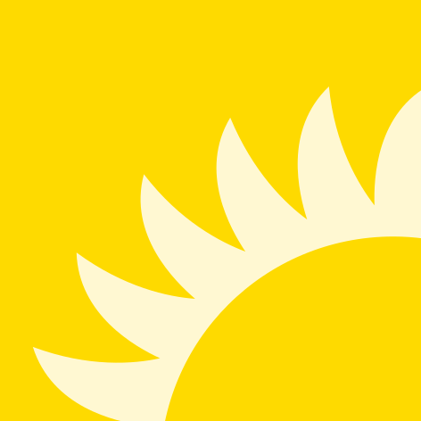

<div class='dashboard-container'>
    <header class='main-header'>
        <div class='logo-container'>
            
            <p>Antodo</p>
        </div>
        <app-task-filter (filterChange)='filterTasks($event)' [filters]='filters'></app-task-filter>
        <button mat-raised-button (click)='logOut()' color="warn">Logout</button>
    </header>

    <article>
        <section class="create-section">
            <h2>Create new task</h2>
            <button mat-button (click)='addTask()' class="add-button">
                <mat-icon>add</mat-icon>
            </button>
        </section>
        <main class='task-container'>
            <app-task *ngFor='let task of (tasks$ | async)' [task]='task' (selectionChange)='updateStatus($event)'
                (editTask)='editTask($event)' (deleteTask)='deleteTask($event)'>
            </app-task>
        </main>
    </article>

    <footer>
        <div class="footer-content">
            <div class='logo-container'>
                
                <p>Antodo</p>
            </div>
            <p>Copyright 2020 ©</p>
            <section class="contacts-container">
                <h3>Contacts</h3>
                <p> Front-end: <a href="https://github.com/GigaGeekKPI">Kirill Kuzmenko</a><br>
                    <a href="https://github.com/sophie-oleynik">Sophie Oleynik</a>
                </p>
                <p> Back-end: <a href="https://github.com/Vlad1229">Vladislav Konchinskiy</a></p>
            </section>
        </div>
    </footer>
</div>